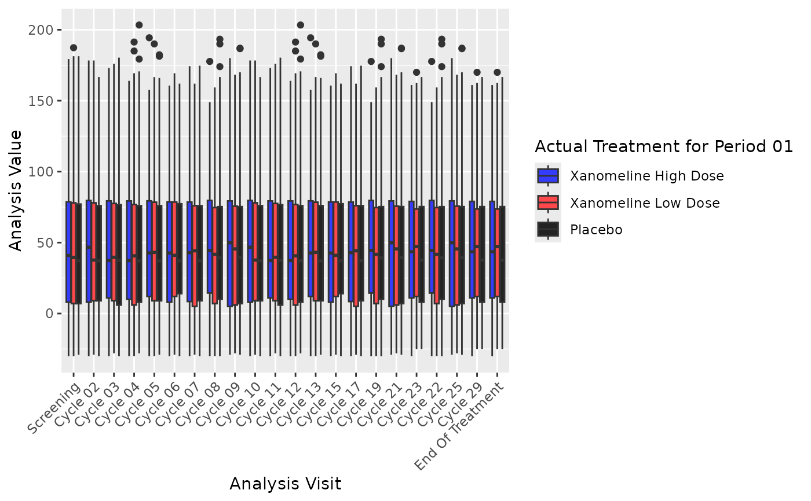

geom_boxplot_j() draws boxplots whose statistics can follow different
percentile definitions for quartiles. By default it uses
quantile(type = 2) to follow PCTLDEF = 5 (SAS default). You can override
the quantile definition via quantile_type. It uses StatBoxplotQuantile
then renders with GeomBoxplot.
Usage
geom_boxplot_j(
mapping = NULL,
data = NULL,
position = "dodge2",
...,
coef = 1.5,
quantile_type = 2,
na.rm = FALSE,
show.legend = NA,
inherit.aes = TRUE
)Arguments
- mapping, data, position, ...
Standard ggplot2 layer arguments passed to
layer()/GeomBoxplot.- coef
Numeric multiplier for the IQR to compute fences. Defaults to 1.5 (Tukey).
- quantile_type
Integer in 1:9 passed to
stats::quantile(type = ...)to compute quartiles. Defaults to 2 (follows PCTLDEF = 5).- na.rm
Logical; if
TRUE, silently removesNAvalues.- show.legend, inherit.aes
See
ggplot2::layer().
Examples
library(ggplot2)
library(pharmaverseadamjnj)
#> Loading required package: pharmaverseadam
#>
#> Attaching package: ‘pharmaverseadamjnj’
#> The following objects are masked from ‘package:pharmaverseadam’:
#>
#> adae, adcm, adeg, adex, adlb, adpc, adsl, advs
ggplot(advs, aes(AVISIT, AVAL, fill = TRT01A)) +
geom_boxplot_j(position = position_dodge2(preserve = "single"), na.rm = TRUE) +
theme(axis.text.x = element_text(angle = 45, hjust = 1))
